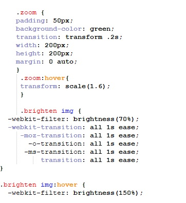

Welcome to the Design Page, this page will document Css and coding used along with information on colour and font etc.
The Navigation Panel has been put together and edited to look Modern but not taking up all of the top of the page.
Display below is both the html and css coding behind the navigation panel design, ive coded and designed the navigation panel to look modern but with a style of being hacker created,
i got my inspiration from numerous hacker movies.
The font used is 'impact' it gives that style of technology in my eyes along with the colours used white and blue.
The code above displays the Css coding, it was a bit of a task positioning the navigation bar but thanks to the Css it was made easier!
The html used is very basic but the css adds all the styling too it
To add some nice hover effects to the pictures on the index page i looked up a tutorial snippit on how to hover over a picture along with make the picture glow when your mouse is over it, this effect looks modern and pretty cool in my eyes so adding it was a must. please see below for the Css.
When thinking of colours used on the website again my inspiration came from watching hacker movies , instead of just making a simple Cipher site i decided i wanted to add a bit of a intrequing story to it.
The follow colours used are Black,Blue,Red and white, to give unique in a way look.
The Font used is 'Impact' this font i decided to use for the website because it had that look of technological / binary to it which suited the website theme well